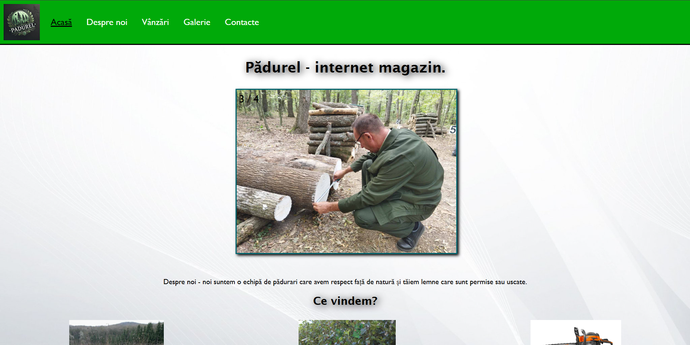

WebMaker - Crearea site-urilor.

WebMaker - Este un site care te ajută să procuri site-uri pe preț plăcut. Sunt un programator începător care lucrez cu ajutorul aplicației Visual Studio Code și limbajele de programare HTML, CSS și Java Script.
WebMaker - Este un site care te ajută să procuri site-uri pe preț plăcut. Sunt un programator începător care lucrez cu ajutorul aplicației Visual Studio Code și limbajele de programare HTML, CSS și Java Script.